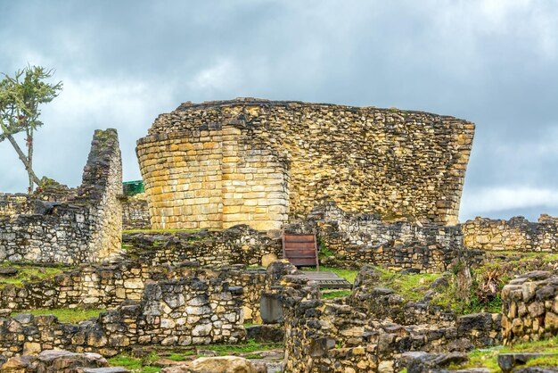
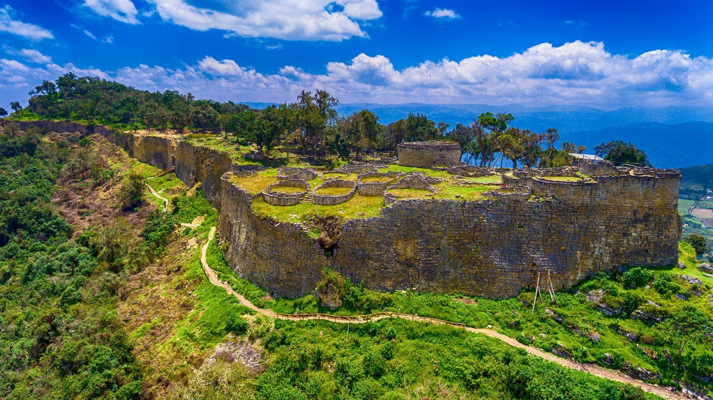

Kuelap - Amazonas, Perú
- Construcción en piedra con muros de hasta 20 metros de altura.
- Diseño urbano complejo con áreas residenciales, plazas y templos.
- Ubicación estratégica para vigilancia y protección.
- Fusión de arquitectura defensiva y ceremonial.
Kuelap como Fortaleza Arqueológica Preincaica

Kuelap es una imponente fortaleza construida por la cultura Chachapoyas en la región Amazonas. Su estratégica ubicación en la cima de una montaña y sus murallas monumentales la convierten en un testimonio excepcional de la arquitectura y defensa preincaica.
- Reconocimiento nacional e internacional.
- Importancia para la conservación arqueológica y cultural.
- Centro de estudios sobre las culturas amazónicas precolombinas.
- Atractivo turístico creciente en la región Amazonas.
Kuelap como Patrimonio Cultural e Histórico

Declarada patrimonio cultural de Perú, Kuelap representa un legado fundamental para entender la cultura Chachapoyas, conocida también como “Los Guerreros de las Nubes”. La fortaleza atrae a arqueólogos y turistas interesados en la historia preincaica amazónica.
- Plazas y estructuras ceremoniales bien conservadas.
- Vestigios de prácticas funerarias y rituales.
- Demostración de la organización social chachapoya.
- Vínculo entre vida cotidiana y creencias espirituales.
Kuelap como Centro Religioso y Social
Además de su función defensiva, Kuelap fue un espacio de gran importancia religiosa y social para la cultura Chachapoyas. Sus plazas circulares y estructuras funerarias indican que allí se realizaban ceremonias y encuentros comunitarios.
- Acceso moderno mediante teleférico con vistas panorámicas.
- Senderos de trekking y ecoturismo.
- Guías especializados que explican la historia y cultura local.
- Fomento del turismo sostenible en la región Amazonas.
Kuelap como Destino Turístico y de Aventura
Hoy en día, Kuelap es uno de los destinos turísticos más importantes de la Amazonía peruana. Su acceso por teleférico y rutas de trekking permiten una experiencia única para quienes buscan cultura, historia y aventura en un entorno natural espectacular.